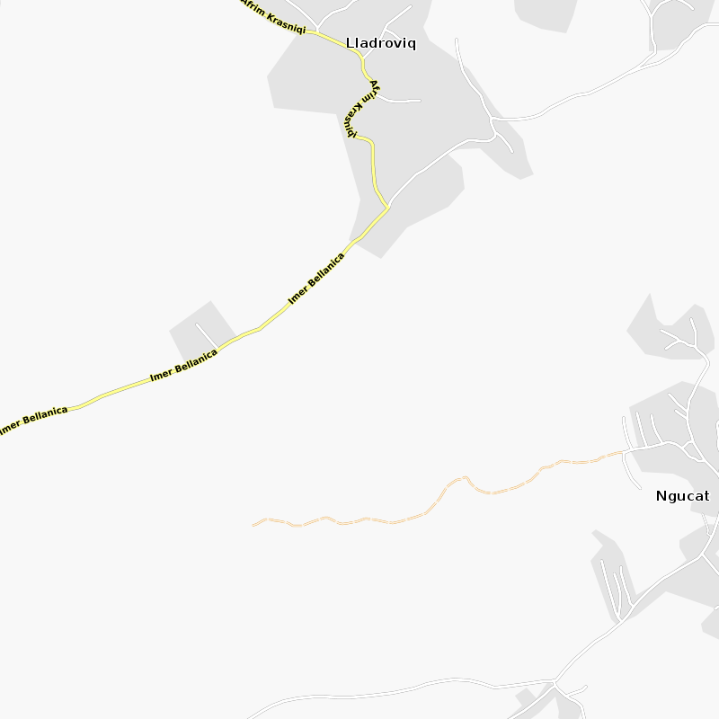
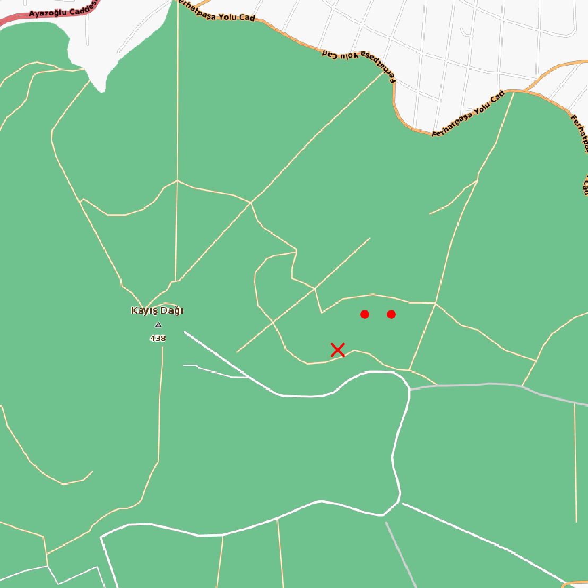

Mapsforge, OSM Bazlı Harita Tabanından Harita Görüntüsü Almak
Açık harita veri tabanı OSM bazlı bir diğer haritalama tabanı ve kodlama altyapısı mapsforge. Eğer kendi diskimizdeki bir dosyadan harita alıp basmak istiyorsak, en basit kod alttaki gibi
import org.mapsforge.core.graphics.GraphicFactory;
import org.mapsforge.core.graphics.TileBitmap;
import org.mapsforge.core.model.Tile;
import org.mapsforge.core.util.MercatorProjection;
import org.mapsforge.map.awt.graphics.AwtGraphicFactory;
import org.mapsforge.map.datastore.MapDataStore;
import org.mapsforge.map.layer.cache.FileSystemTileCache;
import org.mapsforge.map.layer.labels.TileBasedLabelStore;
import org.mapsforge.map.layer.renderer.DatabaseRenderer;
import org.mapsforge.map.layer.renderer.RendererJob;
import org.mapsforge.map.model.DisplayModel;
import org.mapsforge.map.model.FixedTileSizeDisplayModel;
import org.mapsforge.map.reader.MapFile;
import org.mapsforge.map.rendertheme.InternalRenderTheme;
import org.mapsforge.map.rendertheme.XmlRenderTheme;
import org.mapsforge.map.rendertheme.rule.RenderThemeFuture;
import java.io.File;
import java.io.IOException;
public class SaveTiles {
private static final String SAVE_PATH = "/tmp/";
private static final File DEFAULT_MAP_PATH = new File("[DIZIN]/kosovo.map");
// Kosovoda herhangi bir nokta
private static final double LAT = 42.470369;
private static final double LNG = 20.838044;
private static final byte ZOOM = 14;
public static void main(String[] args) throws IOException {
MapDataStore mapData = new MapFile(DEFAULT_MAP_PATH);
final int ty = MercatorProjection.latitudeToTileY(LAT, ZOOM);
final int tx = MercatorProjection.longitudeToTileX(LNG, ZOOM);
Tile tile = new Tile(tx, ty, ZOOM, 800);
GraphicFactory gf = AwtGraphicFactory.INSTANCE;
XmlRenderTheme theme = InternalRenderTheme.OSMARENDER;
DisplayModel dm = new FixedTileSizeDisplayModel(256);
RenderThemeFuture rtf = new RenderThemeFuture(gf, theme, dm);
RendererJob theJob = new RendererJob(tile, mapData, rtf, dm, 1.0f, false, false);
File cacheDir = new File("/tmp", "tmp");
FileSystemTileCache tileCache = new FileSystemTileCache(10, cacheDir, gf, false);
TileBasedLabelStore tileBasedLabelStore = new TileBasedLabelStore(tileCache.getCapacityFirstLevel());
DatabaseRenderer renderer = new DatabaseRenderer(mapData, gf, tileCache, tileBasedLabelStore, true, true, null);
Thread t = new Thread(rtf);
t.start();
TileBitmap tb = renderer.executeJob(theJob);
tileCache.put(theJob, tb);
mapData.close();
System.out.printf("Tile has been saved at %s/%d/%d/%d.tile.\n", cacheDir.getPath(), ZOOM, tx, ty);
}
}
Bu kod için gereken jar dosyaları,
https://mvnrepository.com/artifact/net.sf.kxml/kxml2/2.3.0
https://mvnrepository.com/artifact/org.mapsforge/mapsforge-core/0.12.0
https://mvnrepository.com/artifact/org.mapsforge/mapsforge-core/0.12.0
https://mvnrepository.com/artifact/org.mapsforge/mapsforge-map-awt/0.12.0
https://mvnrepository.com/artifact/org.mapsforge/mapsforge-map-reader/0.12.0
https://mvnrepository.com/artifact/org.mapsforge/mapsforge-themes/0.12.0
https://mvnrepository.com/artifact/com.kitfox.svg/svg-salamander/1.0
Kodu derlemek icin gerekli iskelet dizi, Ant yapisi icin
https://github.com/burakbayramli/kod/tree/master/sk/2019/12/staticmap
Mapsforge tabanları pek çok ülke için bulunabilir, mesela Kosova için
(ufak olduğu için oraya gittik), kosovo.map indirilir,
http://download.mapsforge.org/maps/v5/europe/
istenilen dizine konup ona göre kod ayarlanınca, ant run ile
işletiriz, ve sonuç bir tile dosyası oluyor, alttaki gibi çıkacak,


Dikkat: enlem/boylam verip bir statik elde ettiğimizde bu harita verilen enlem/boylam merkezli ortalanmış olmayabiliyor. Haritanın ortasının hangi kordinatlara sahip olduğunu bulmak için
double centerlon = tile.getBoundingBox().getCenterPoint().getLongitude();
double centerlat = tile.getBoundingBox().getCenterPoint().getLatitude();
işletilebilir.
Python
Eğer Python üzerinden Java çağırmak istiyorsak, şu şekilde bir değişiklik yapabiliriz,
...
import org.mapsforge.core.model.LatLong;
import org.mapsforge.core.model.Point;
public class SaveTiles {
private static final String SAVE_PATH = "/tmp/";
private static File DEFAULT_MAP_PATH;
private static byte ZOOM;
public static void main(String[] args) throws IOException {
DEFAULT_MAP_PATH = new File(args[2]);
ZOOM = (byte)Integer.parseInt(args[3]);
String [] tokens = args[0].split(",");
double LAT = Double.parseDouble(tokens[0].split(";")[0]);
double LNG = Double.parseDouble(tokens[0].split(";")[1]);
MapDataStore mapData = new MapFile(DEFAULT_MAP_PATH);
final int ty = MercatorProjection.latitudeToTileY(LAT, ZOOM);
final int tx = MercatorProjection.longitudeToTileX(LNG, ZOOM);
Tile tile = new Tile(tx, ty, ZOOM, 800);
System.out.print("{\"pixels\":[");
for (int i=0;i<tokens.length;i++){
double currlat = Double.parseDouble(tokens[i].split(";")[0]);
double currlng = Double.parseDouble(tokens[i].split(";")[1]);
Point pix = MercatorProjection.getPixelRelativeToTile(new LatLong(currlat,currlng), tile);
System.out.print("[" + pix.x + ","+pix.y+"]");
if (i<tokens.length-1) {
System.out.print(",");
}
}
System.out.print("]");
GraphicFactory gf = AwtGraphicFactory.INSTANCE;
XmlRenderTheme theme = InternalRenderTheme.OSMARENDER;
DisplayModel dm = new FixedTileSizeDisplayModel(256);
RenderThemeFuture rtf = new RenderThemeFuture(gf, theme, dm);
RendererJob theJob = new RendererJob(tile, mapData, rtf, dm, 1.0f, false, false);
File cacheDir = new File(args[1], "");
FileSystemTileCache tileCache = new FileSystemTileCache(10, cacheDir, gf, false);
TileBasedLabelStore tileBasedLabelStore = new TileBasedLabelStore(tileCache.getCapacityFirstLevel());
DatabaseRenderer renderer = new DatabaseRenderer(mapData, gf, tileCache, tileBasedLabelStore, true, true, null);
Thread t = new Thread(rtf);
t.start();
TileBitmap tb = renderer.executeJob(theJob);
tileCache.put(theJob, tb);
mapData.close();
System.out.printf(",\"file\": \"%s/%d/%d/%d.tile\"", cacheDir.getPath(), ZOOM, tx, ty);
System.out.print("}");
}
}
Bu koda bir kordinat listesi verebiliyoruz, ve cevap olarak bir sözlük içinde piksel olarak o kordinatların yerleri, ve imaj dosyası yeri raporlanıyor.
Altta Python'dan Java çağrısının nasıl yapıldığını, girdi ve çıktı
işleme görülüyor. Çağrıyı aslında komut satırı ile yapıyoruz,
subprocess paketi ile, bir anlamda bir süreç başlatıp Java'yı orada
işletiyoruz, ve sonucu alıp Python'dan devam ediyoruz.
import numpy as np, json
import matplotlib.pyplot as plt
from PIL import Image
import subprocess, os, json
def plot(points,outfile,pixel=False,bp=True):
plt.figure()
res = load_map(pts)
pixels = res['pixels']
found_file = res['file']
im = Image.open(found_file)
nim = np.array(im)
plt.axis('off')
fig=plt.imshow(im)
fig.axes.get_xaxis().set_visible(False)
fig.axes.get_yaxis().set_visible(False)
plt.imshow(im)
for i,[xx,yy] in enumerate(pixels):
if xx > nim.shape[0] or yy > nim.shape[1] or xx<0 or yy<0: continue
if i==0:
if bp: plt.plot(xx,yy,'rx')
else: plt.plot(xx,yy,'r,')
else:
if pixel:
plt.plot(xx,yy,'r,')
else:
plt.plot(xx,yy,'r.')
plt.savefig(outfile, bbox_inches='tight', pad_inches = 0, dpi = 300)
def load_map(pts):
spts = str([str(pt[0]) + ";" + str(pt[1]) for pt in pts])
spts = spts.replace('[','').replace(']','')
spts = spts.replace("'","").replace(" ","")
cmd = ['/bin/sh',os.environ['HOME']+'/Documents/kod/nomadicterrain/map/staticmap/run.sh', spts,'/tmp','/home/burak/Downloads/turkey.map','14']
result = subprocess.run(cmd, stdout=subprocess.PIPE)
res = json.loads(result.stdout.decode('utf-8'))
return res
lat1,lon1=40.970041,29.170311
lat2,lon2=40.971041,29.171311
lat3,lon3=40.971041,29.172311
pts = [[lat1,lon1],[lat2,lon2],[lat3,lon3]]
plot(points=pts, outfile="/tmp/out.png")
Ayrıca run.sh lazım,
DIR=$HOME/Documents/kod/nomadicterrain/map/staticmap
java -cp $DIR/build:$DIR/lib/kxml2-2.3.0.jar:$DIR/lib/mapsforge-core-0.12.0.jar:\
$DIR/lib/mapsforge-map-0.12.0.jar:$DIR/lib/mapsforge-map-awt-0.12.0.jar:\
$DIR/lib/mapsforge-map-reader-0.12.0.jar:$DIR/lib/mapsforge-themes-0.12.0.jar:\
$DIR/lib/svg-salamander-1.0.jar \
SaveTiles $1 $2 $3 $4
Üç tane nokta bastık, sonucu altta görüyoruz,


Yukarı